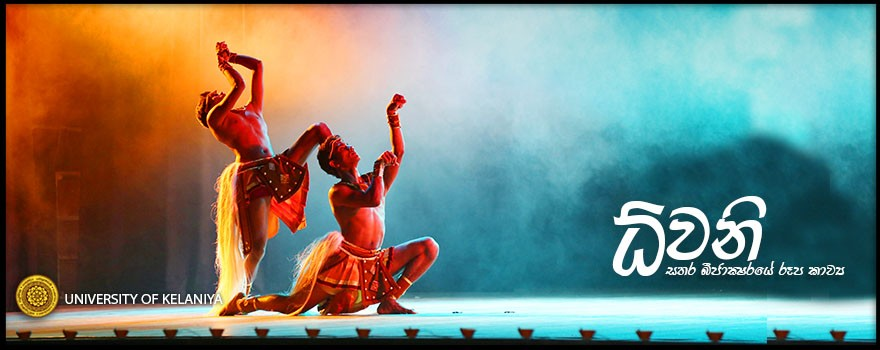

The Recent Events Of University of kalanya
Sahurda Sandhwani : the annual musical entertainment programme organised by the Welfare Society of Faculty of Commerce & Management Studies, University of Kelaniya was held on the 23rd of February 2018 at the auditorium of the Faculty of Commerce & Management Studies. The main objective of the programme was to arouse the musical taste of the academic and non-academic staff members of the Faculty of Commerce & Management Studies while identifying their aesthetic skills. During the first stage of the programme, a meaningful discussion on the topic of classical music was conducted by Dr. Sudath Weerasiri, Senior Lecturer of the Department of Marketing Management, while the second stage was marked by the performances of the members of the Welfare Society of the Faculty of Commerce & Management Studies. The programme was held under the patronage of Professor D.M. Semasinghe, Vice-Chancellor of the University of Kelaniya and the event was graced by Dr. P.N.D. Fernando, Dean of the Commerce & Management Studies, Heads of the Departments of the Faculty of Commerce & Management Studies, all the other staff members of the faculty; including all the academic and non-academic staff of the Faculty.
The final phase of the Inter University Gender Festival to celebrate gender equity and equality sponsored by the Centre for Equity and Equality of the Ministry of Higher Education, organised by the Centre for Gender Studies of the University of Kelaniya was successfully held on the 20th, 21st and the 22nd of February 2018 in the University premises. The festival was mainly held to promote public awareness on gender equity and equality. Earlier, the Phase I of the Inter –University Gender Festival was held in May last year at the Eastern University . The Phase II was held in November at the University of Peradeniya with the participation of undergraduates who follow Arts and Performing Arts from all the 15 universities, which covered a training programme on topics related to gender issues. The Introductory Programme of the Inter-University Gender Festival 2018 was held on the 20th of February 2018 . During the Introductory Programme, there was a session where the undergraduates shared experiences and recapped Phase I & II. The session was chaired by Dr. Wijaya Jayathilake and Dr. S. Jeyasankar, Members of Gender Standing Committee, University Grants Commission. On the day 02 (21st February), special workshops targeting schoolchildren and academic staff were held. Accordingly, the Student workshop on Introduction to Gender . The undergraduates representing the Universities of Kelaniya, Jaffna, Uva-Wellassa, Sripalee Campus of the University of Colombo, Peradeniya, Visual and Performing Arts and Rajarata participated in this festival and there was a short film screening and panel discussion chaired by the veteran filmmaker Ms. Anoma Rajakaruna. The closing ceremony of the festival was held on the 22nd February 2018 at Sri Dharmaloka Convocation Hall of the University of Kelaniya . The closing ceremony was also included a variety of aesthetic performances by the undergraduates of state universities. The Phase III of the Inter-University Gender Festival 2018 was coordinated by Professor Maitree Wickremasinghe, the Founder Director of the Centre for Gender Studies .
The Department of Accountancy (DoA) is one of the leading Departments in the Faculty of Commerce & Management Studies, University of Kelaniya. At present , the DoA conducts Bachelor of Business Management (Special) Accountancy Degree Programme. The DoA is committed to pursue excellence in research, teaching, consultancy services and internship. The Annual Internship and Training programme of the DoA is a pre-professional applied experience that offers practical work exposure in the world of work, which allows students to apply the theory they learnt in the classroom back in a professional work environment. The DoA is the pioneer of introducing internship programme into the undergraduate curriculum of the University of Kelaniya in 1999. This year, the Internship Felicitation Ceremony: IDeA Night 2018, was successfully held on the 28th of February 2018 at Grand Ballroom of Hotel Galadari, Colombo for the 19th consecutive year. The IDeA Night 2018 aims to appreciate and celebrate the success of the undergraduates who have successfully completed their internship programme and to felicitate the contribution of the training partners representing both audit and non-audit sectors. This event provided a great opportunity for interns to network with professionals and allows companies to find skillful graduates for their employments. The highlights of the event were, launching the 5th volume of the Case Studies in Accounting journal, felicitating training partners, awarding the best interns and awarding certificates for interns who have successfully completed the Internship in Accounting programme. Ms. Hiruni Reshani was awarded as the Best Intern for the year 2017. IDeA Night 2018 was graced by the chief guest of the event, Dr. Narada Fernando, Dean, Faculty of Commerce & Management Studies, University of Kelaniya, the guest of honor, Mr. Jagath Perera, the President of the Institute of Chartered Accountants of Sri Lanka and the special representative of ACCA, Mr. Sahad Mukthar. Further, the event was graced by Professor J.M.D. Ariyarathna, Dean, Faculty of Graduate Studies, Dr. Anura Karunarathne, Head of the Department of Accountancy, Professor P.M.C. Thilakarathna, Director, Centre for Distance and Continuing Education, Mr. Prabath Perera, Coodinator of the Internship in Accounting programme, Academic staff of the Department of Accountancy, different industry experts, corporate partners, training partners, professionals and accountancy undergraduates of all four years.
A session in which senate awards and financial rewards were presented to appreciate the researchers in the University of Kelaniya was held on the 22nd of February 2018 at the Senate Room of the University of Kelaniya. Professor D.M. Semasinghe, Vice-Chancellor, the Deans of all faculties, the awardees, members of the Senate including Professors and other academic staff graced the event. The researchers were appreciated with awards and financial rewards for their latest research publications indexed in Science Citation Index (SCI), Social Sciences Citation Index (SSCI) and Art & Humanities Citation Index (AHCI) in 2017 as well as for the research papers published in the journals indexed other than those indexed in SCI, SSCI and AHCI in 2016 and 2017. Accordingly, Dr. M.A. Niriella, Senior Lecturer of the Department of Medicine– the Faculty of Medicine, received three Cash Awards and Senate Honours for his research papers which were published in 2017 in the journals indexed in SCI, SSCI and AHCI, for his research paper published in 2016 in the journals indexed other than those indexed in SCI, SSCI and AHCI as well as for his research paper published in 2017 in the journals indexed other than those indexed in SCI, SSCI and AHCI. Dr. D.S.M. De Silva, Senior Lecturer of the Department of Chemistry – the Faculty of Science, received Cash Awards and Senate Honours for her research paper published in 2017 in the journals indexed in SCI, SSCI and AHCI. While, Dr. Nimanthi Jayathilaka, Senior Lecturer of the Department of Chemistry - the Faculty of Science, received Cash Awards and Senate Honours for her research paper published in 2017 in the journals indexed other than those indexed in SCI, SSCI and AHCI.
Stay connected with us